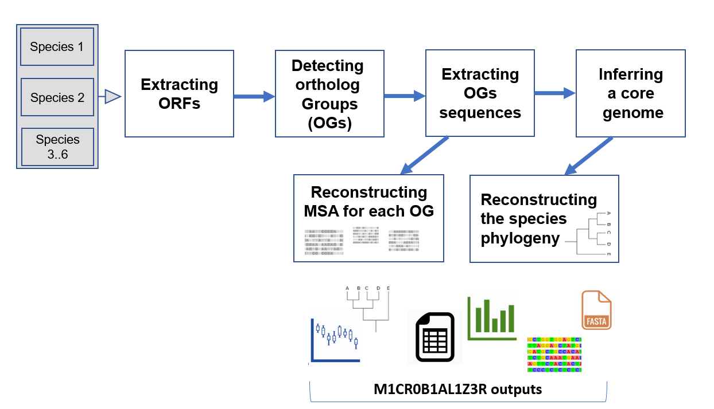

Introduction
Significant technological advances in the last decade have enabled the use of large-scale sequencing, mining, and analysis of bacterial and archaeal genomic data in an unprecedented resolution. Such large-scale analyses have contributed to our understanding of microbial diversity and evolution, both within populations and among different phylogenetic groups. Following sequencing and genome assembly, analyzing microbial genomics data involves various computational steps such as the detecting open reading frames (ORFs), finding orthologous groups, aligning orthologous sequences, and reconstructing phylogenetic trees. These steps as well as additional analysis-specific computations require the use of multiple bioinformatics tools and various ad-hoc programming scripts, making the entire process cumbersome, tedious, and prone to errors due to manual handling. This has prompted laboratories to implement their own in-house analysis pipelines, and thus different analysis applications have begun to emerge. These applications require specific working environments, i.e., operating system, multi-cores machines, and more than basic technological skills, such as installations and running.
The motivation for developing M1CR0B1AL1Z3R
M1CR0B1AL1Z3R (pronounced: microbializer) was developed in order to facilitate large scale microbial genomics analyses. Our goal was to make M1CR0B1AL1Z3R easily accessible to the scientific community and thus to allow handling the abovementioned computational challenges of analyzing dozens of bacterial genomes simultaneously. Such computations are highly demanding, and therefore, M1CR0B1AL1Z3R runs background computational processes in parallel on a high-performance computer cluster. Notably, due to the high computational demand of these analyses, they cannot run on a simple desktop computer. To this end, M1CR0B1AL1Z3R enables the research community to analyze massive genomic data that previously necessitated expensive computational infrastructure and expert knowledge. Visual and textual results, ready for publication or further analysis, are given as an output.
The type of data analyzed by M1CR0B1AL1Z3R
The input to the M1CR0B1AL1Z3R web server is a collection of genomic sequences, one file for each genome. In other words, the input data were already binned (binning is the classification of reads and contigs to different taxonomic units) and assembled (the generation of contigs from sequence reads). Of note, we do not assume that the reads were assembled to a single contig. The input to our web server can thus be microbial genomes, where each genome is composed of one or multiple contigs. Currently, the web server is designed for bacterial and archaeal genomes (eukaryotic genomes and transcriptomes are not handled). As we show in the
Gallery section, M1CR0B1AL1Z3R is useful for analyzing genomes from a range of phylogenetic relatedness: from genomic sequences of bacterial isolates of a specific species, to genomes of different species that belong to a diverse phylogenetic group such as the Gammaproteobacteria.
Input specification
The input for the web server is a zipped folder (either
.zip
or
.tar.gz) in which each file is in a
FASTA format containing genomic sequence of a different species. Each file can contain either a fully assembled genome or a collection of contigs (originating from the same genome).
Basic terms used in M1CR0B1AL1Z3R
-
An open reading frame (ORF) is the part the gene that encodes for a protein.
-
Orthologous genes or orthologs are genes that diverged from a single gene in the common ancestor of the analyzed genomes, following speciation events. Orthologous genes have high sequence similarity that can be detected using remote homology search algorithms such as BLAST. High sequence similarity can also stem from gene duplication events and in this case, the sequences are not orthologs but are considered paralogs. Finally, genes can undergo horizontal transfer events, and in this case they are considered xenologs.
-
Species tree reflect the evolution of orthologous sequences, i.e., the vertical phylogenetic relationships among the analyzed genome. In Bacteria and Archaea, many genes do not follow the species tree due to horizontal gene transfer events. Gene trees (are being reconstructed based on a MSA of a single-gene orthologous group and thus) represent the evolutionary relationships among the analyzed genes. Gene trees can differ from the species tree due to horizontal gene transfer and gene duplications events. Trees in general are inferred and not observed and as such they are subjected to biases and errors (see Can I trust the obtained core gene phylogenetic tree?).
-
A phyletic pattern matrix is a table in which row i is an orthologous group, column j is a genome and the i,j entry contains 1 if the member of orthologous family i from genome j is present, o.w., 0. Phyletic patterns data are used to infer events of gene loss and gene gain (acquisition), taking into account the phylogenetic relationships among the analyzed genomes.
-
Core genes are genes that are shared by all analyzed genomes. The protein sequences that are encoded by these genes are called the core proteome. Core genes are often essential to the organism and hence are never lost. As these genes are found in all analyzed genomes, they are often used to reconstruct the species tree. In contrast, the pan genome is the entire set of genes, i.e., a gene belongs to the pan genome if it is present in at least one of the analyzed genomes.
-
GC content: the percentage of the nucleotides G and C out of the total number of nucleotides. GC content varies among genomes.
Output and methodology
M1CR0B1AL1Z3R implements the following algorithmic steps:
-
M1CR0B1AL1Z3R extract all ORFs from all genomes using Prodigal (Hyatt D., et al., BMC Bioinformatics, 2010).
-
M1CR0B1AL1Z3R detects homologous genes (all against all) using
MMSEQS2 (Steinegger M. & Soding J., Nat Biotechnol, 2017) and then clusters them using
MCL (Van Dongen SM., Thesis, 2000).
-
M1CR0B1AL1Z3R translates each orthologous group and uses MAFFT (Katoh K. & Standley DM., Mol Biol Evol, 2013) to reconstruct an amino acid (AA) multiple sequence alignment. Once aligned, M1CR0B1AL1Z3R reverse translates each AA alignment to get the corresponding codon alignment.
-
M1CR0B1AL1Z3R computes the core-proteome (proteins that are shared across all bacterial genomes) and provides the core-proteome alignment, based on which, the species tree is often inferred. In cases where there are duplications (i.e., two genomes for which the sequences of the core genes are identical), a reduced core-proteome alignment (containing only unique sequences) is provided as well.
-
M1CR0B1AL1Z3R reconstructs a maximum-likelihood-based phylogenetic tree using
RAxML (Stamatakis A., Bioinformatics, 2014) based on the inferred core-proteome alignment
and visualizes it interactively using PhyD3 (Kreft L., et al., Bioinformatics, 2017).
-
Several statistics regarding the pan genome (the entire set of genomes analyzed) are also provided, e.g., the GC content, the distribution of the number of ORFs across the analyzed genomes, and the distribution of the sizes of the orthologous groups.
M1CR0B1AL1Z3R provides the following results:
-
Folder #11: A curated table of orthologous sets and a corresponding phyletic pattern matrix;
-
Folder #12: A Fasta file for each orthologous set containing the UNALIGNED DNA sequences of the set members;
-
Folder #13: A Fasta file for each orthologous set containing the UNALIGNED AA sequences of the set members;
-
Folder #14: A Fasta file for each orthologous set containing the ALIGNED AA sequences of the set members;
-
Folder #15: A Fasta file containing the inferred core-proteome of the species in the dataset (and additional statistics such as;
-
Folder #16: A reliable maximum likelihood species phylogeny tree*. We recommend using the interactive PhyD3 tool embedded in the Results page to personalize the phylogeny figure visualization parameters;
-
Folder #17: ORF statistics per genome.
-
Folder #18: A Fasta file for each orthologous set containing the ALIGNED DNA sequences (codon alignment) of the set members;
-
Folder #19: A bar plot of the group sizes frequency*.
-
Folder #20: A violin plot of the ORF count (per genome) dispersion* and
a violin plot of the GC-content (per genome) dispersion, among protein coding genes*.
*Raw data is provided as well
Please feel free to try it yourself!
Click
here to submit the provided
example dataset or go to the
Gallery section.